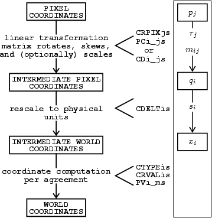
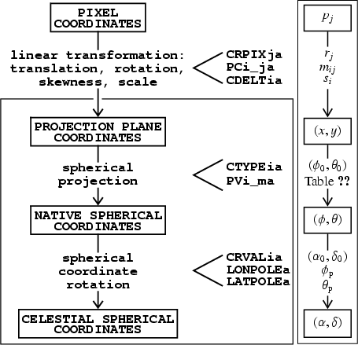

World Coordinate Systems
Stuart Mumford
WCS means WCS
World Coordinate Systems map physical (world) coordinates to pixel coordinates.
The conventions of this system originate from what is now the FITS standard but started as a set of FITS conventions.
FITS WCS has specific support for celestial (spatial on the sky), spectral, temporal and Stokes polarisation coordinates.
Critically, the FITS WCS standards describe how to serialise this WCS information into a FITS header.
Not FITS WCS
A quick aside to point out that there are alternative WCS implementations. They all share a lot of commonality with what is laid out in the FITS WCS standards (in terms of the transformations and mathematics), but they don't all serialise to a FITS header.
This means they can represent more complex multi-stage transforms, and is why gWCS and asdf were created at STScI.
All the calibrated DKIST data products are easily represented in the FITS WCS standard. Only DL-NIRSP's raw data would call for something more complex like gWCS.
Mapping World to Pixel
The stages of the transformation between pixel and world are shown here taken from the first WCS paper.
This applies to all the coordinate types.

Fig 1. Greisen & Calabretta A&A 395, 1061-1075 (2002)
The core components of a WCS in a FITS header
There are a few sets of keys which are required to represent a WCS. Here we list them with some example values for solar celestial coordinates.
The n index here is the pixel index, all WCSes in FITS must have the same number of world dimensions as there are in the array.
CTYPEn |
HPLN-TAN, HPLT-TAN | The coordinate type |
CRVALn |
0, 0 | The physical coordinate at the reference pixel |
CRPIXn |
2048, 2048 | The pixel coordinate of the reference pixel |
CDELTn |
0.6, 0.6 | The size of the reference coordinate in the world coordinates |
CUNITn |
arcsec, arcsec | The units of the world coordinates |
PCi_j |
(an identity matrix n x n) | An affine transform matrix to apply to the pixel coordinates |
Celestial Coordinates and Map Projections
The final step of the WCS transform is taking the linearly scaled intermediate coordinates and processing them as world coordinates.
This is most often seen in solar physics data as a map projection and rotation of the celestial coordinates.


Solar Coordinate Systems: A Lighting Fast Introduction
Heliographic
Heliocentric
Helioprojective
Helioprojective Cartesian Coordinates and the Small Angle Approximation
A common misunderstanding amongst solar physicists is that the coordinate system named "Helioprojective Cartesian" isn't actually a Cartesian coordinate system.
🤦